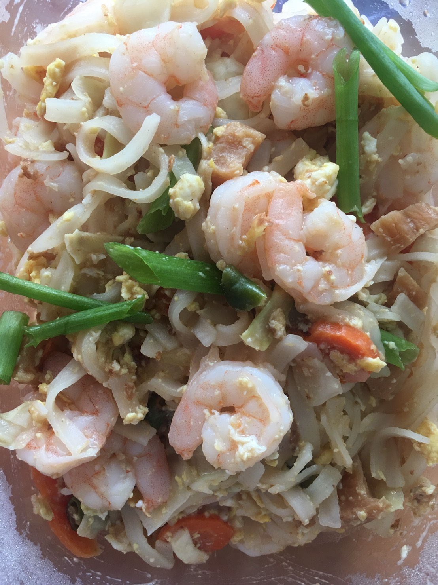
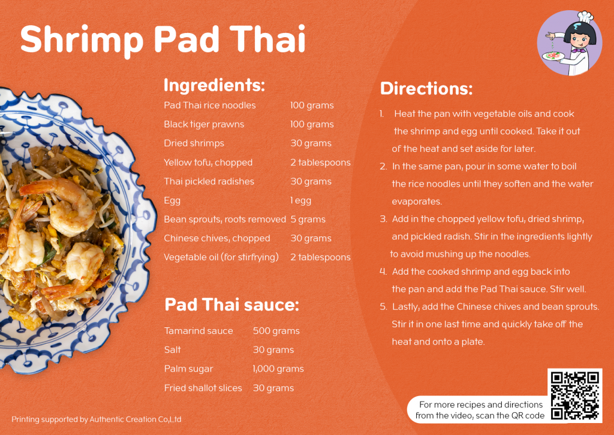
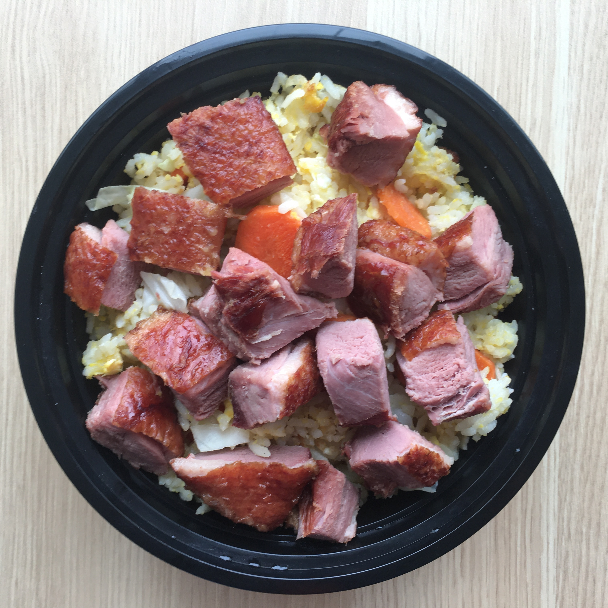

My Hobby
What is my hobby?
Hello everyone ! My name is Sirikalaya Siripattarakul or you can call me JJ. I’m from Thailand.
This is my first web page that I will show you about my hobby. I have many hobby in Thailand but when I move to study at USA. I don’t have hobby in here but now I have my hobby when Covid-19 happen. You know what is my hobby? My hobby is cooking. I never think I can cook. Usually I cook like normal fried rice and Thai omelette that is. But now I cook many thing that I want to eat. I enjoy to cook Thai food because I can learn many thing for cooking , I can adapt food when I can’t find ingredient in the USA. And save money(This is an important to me now)
How can I cook?
Now I will tell you. If you interesting my hobby. How can I cook Thai food. It’s easy.
- You should to think about what kind of food that you want to make it.
- If you know your food that you want to make it. You can find how to cook your food on internet or youtube.
- You prepare ingredient for cook. And the last step.
- You do it when you cook you should to taste too. You will know you should add seasoning or not,. If taste it delicious don't add seasoning if not you can add more seasoning.
How to learn cook Padthai by yourself
- I search word how to cook padthai on google. I use my language.
- I watch this to learn how you can make padthai on youtube PadThai(foodtravel) and PadThai Wilai kitchen
You go to buy ingredient at Asian market.
- Cook now and this is my padthai

Now we will start to cook Padthai with shrimp

Traditional recipe by Omni Deli under Chitralada Technology Institute

Traditional recipe by Omni Deli under Chitralada Technology Institute
How can I learn to cook?
Before I can cook a little and now I can cook more food and adapt it. If you think you want to make another food. You can search on google , and watch on youtube. For me usually I use my language for search and you can use your language for search.
Usually I use this website
foodtravel.tv
Pitpilai Kitchen
Thai recipes
This is my food that I cook.



Congratulation you can cook now!
If you know how to cook it will make you fun when you cook it. And you will proud when your friend or people that you know enjoy to eat your food!!!